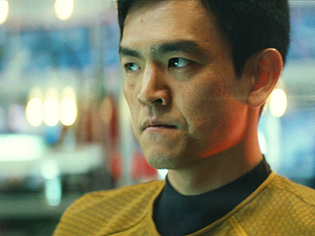

The Yellow Shirts
The yellow shirts represent 3 different roles on the ship. We have the captain of course who leads his/her crew and is in charge of the entire ship. The pilot who flies the ship is also graced with wearing the yellow shirt. We then come to the person or persons involved in setting courses and guiding the ship which falls under the role of navigation.
The Red Shirts
The red shirts are perhaps the most common uniform among most of the crew. First we have the engineers which maintain the ship's integrity and functionality. There are those who fit within the role of communication. There are those who protect the safety and well being of the crew and they fall under the security role. Finally we have operations which pretty much handles everything else not mentioned.
The Blue Shirts
The blue shirts are reserved for only 2 roles on a ship. There are the science officers and crew members which handle everything from examining new species to surveying anomalies and stars. The medical staff represent the 2nd lue shirt role. The medical staff has the responsibilty of keeping the crew as healthy as can be. It is up to them to have the crew maintain a healthy lifestyle and cure them of any ailments.